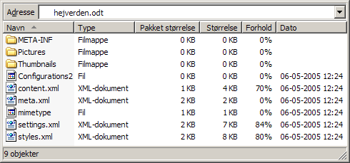

OpenDocument Format (ODF) - ISO/IEC 26300:2006 �ben standard for kontordokumenter udviklet af OASIS
Beskrivelse
Den produktuafh�ngige dokumentstandard, Open Document Format (ODF), er den �bne ISO-standard for kontordokumenter som tekstdokumenter, regneark, pr�sentationer og diagrammer. ODF-dokumenter kan derfor �bnes og l�ses uafh�ngigt af specifikke kontorpakker og leverand�rer. ODF er et XML-baseret dokumentformat udviklet i standardorganisationen OASIS (Organization for the Advancement of Structured Information Standards) og vedtaget af International Organization for Standardization. OASIS p�begyndte udviklingen af ODF i 2002, og 1. maj 2005 blev standarden vedtaget som officiel OASIS-standard. 1. maj 2006 vedtog ISO ligeledes ODF som ISO-standarden ISO/IEC 26300:2006.
Da ODF er veldokumenteret, frit implementerbar uden �konomiske, politiske, juridiske eller tekniske begr�nsninger p� implementation og anvendelse samt standardiseret og vedligeholdt i et �bent forum, opfylder ODF fuldt ud kriterierne for en �ben standard. ODF er s�ledes et produktuafh�ngigt filformat for kontordokumenter, der frit og uden forfordeling kan anvendes og underst�ttes af alle leverand�rer, der �nsker at give slutbrugerne friheden til at v�lge software.
Udviklingen og vedligholdelsen af specifikationen for den �bne XML-baserede standard foreg�r i en �ben arbejdsgruppe under OASIS, hvor alle relevante leverand�rer har mulighed for at deltage p� lige fod. Forslag kan ogs� sendes til arbejdsgruppens offentlige e-post-adresse office-comment@lists.oasis-open.org. I arbejdsgruppen deltager repr�sentanter fra softwareleverand�rer som bl.a. Sun Microsystems, IBM, Corel, Adobe, Novell, Intel, udviklere fra Open Office.org og KOffice samt uafh�ngige eksperter i bl.a. handicaptilg�ngelighed.
Standarden rummer og udvider s�ledes den funktionalitet, der kr�ves for at underst�tte de office-dokumenter, der findes i leverand�rkontrollerede og produktafh�ngige formater. Derfor erstatter ODF for�ldede, propriet�re, produktspecifikke og m�ske patenterede filformater for office-dokumenter. OpenOffice.org indeholder en guide til hurtigt at konvertere mange Office-dokumenter til ODF.
Dokumentstandarden ODF er allerede underst�ttet af kontorprogrammer som OpenOffice.org, StarOffice, IBM Workplace, KOffice, Gnumeric, Mobile Office, NeoOffice, AbiWord, Zoho, Scribus, TextMaker og Google Docs & Spreadsheets.
Fordelene med ODF
ODF giver dig og din virksomhed tekniske og strategiske fordele:
- En �ben ISO-standard baseret p� et gennemf�rt, velafpr�vet og velstruktureret XML-format, som n�sten alle relevante leverand�rer af kontorprogrammer samarbejder om at vedligeholde og udvikle i et �bent forum under standardorganisationen OASIS.
- Sikkerhed for standardens leverand�ruafh�ngighed og opbakning i industrien, da ODF allerede er godkendt af b�de OASIS og ISO samt implementeret af forskellige leverand�rer i flere softwareprodukter p� flere platforme.
- En produktuafh�ngig standard, der b�de sikrer �gte interoperabilitet og underst�ttelse af al relevant funktionalitet p� tv�rs af forskellige programmer.
- En innovativ, omfattende og gennemtestet XML-standard, der er let at forst� og implementere, fordi den g�r brug af velkendte, etablerede standarder som HTML, SVG, XSL, SMIL, XLink, XForms, MathML og Dublin Core frem for propriet�re teknologier.
- Zip-komprimerede dokumenter giver mindre filst�rrelser og dermed mindre belastning af postservere og netv�rk.
- En b�de frit tilg�ngelig og frit anvendelig specifikation, der sikrer uhindret og leverand�ruafh�ngig adgang til og r�deret over dit dokument og dets indhold - ogs� i fremtiden.
- Frit valg af kontorpakke herunder Open Source Software, da ODF skaber �ben konkurrence uden skjulte bindinger til specifikke programmer.
- Fri udveksling af dokumenter, da ODF-dokumenter ikke er bundet til en specifik version af et specifik produkt p� en specifik platform.
- Mulighed for at undg� leverand�rkontrolleret it-infrastruktur til fordel for en strategidrevet it-arkitektur, der kan integrere, producere og udveksle kontordokumenter p� tv�rs af programmer, platforme, back-end systemer og web services.
For at du og din virksomhed kan f� fuld gl�de af ovenst�ende fordele, skal du bruge ODF proaktivt. Derfor b�r du overveje f�lgende retningslinjer:
- Stil ufravigelige krav til dine leverand�rer om, at de skal underst�tte ODF, s� du har strategisk og �konomisk valgfrihed samt leverand�ruafh�ngig adgang til egne data.
- L�g altid ODF-udgaver af dokumenter p� hjemmesiden.
- Er du usikker p�, om modtageren kan l�se ODF-dokumenter, kan du evt. ogs� vedl�gge en PDF-udgave.
- Tilf�j f�lgende undertekst til meddelelser, hvor du har vedlagt ODF-dokumenter:
Vedlagte dokument(er) er gemt i det �bne OpenDocument Format (ODF). ODF er en OASIS- og ISO-standard (ISO/IEC 26300:2006) for kontordokumenter, som du kan l�se mere om her: http://en.wikipedia.org/wiki/OpenDocument
Dokumenttyper
ODF standardiserer kontordokumenter i form af tekstdokumenter, regneark, pr�sentationer og diagrammer. F�lgende oversigt viser de enkelte dokumenttyper, deres filendelse samt ikonet, som OpenOffice.org bruger til at illustrere dokumenttypen. Du er velkommen til at bruge ikonerne p� dine egne hjemmesider.
| Ikoner | Dokumenttype | Filendelse |
|---|---|---|
   | OpenDocument-tekst | .odt |
   | OpenDocument-tekstskabelon | .ott |
   | OpenDocument-hoveddokument | .odm |
   | OpenDocument-HTML-dokumentskabelon | .oth |
   | OpenDocument-regneark | .ods |
   | OpenDocument-regnearksskabelon | .ots |
   | OpenDocument-tegning | .odg |
   | OpenDocument-tegningsskabelon | .otg |
   | OpenDocument-pr�sentation | .odp |
   | OpenDocument-pr�sentationsskabelon | .otp |
   | OpenDocument-database | .odb |
   | OpenDocument-formel | .odf |
L�s mere om de enkelte MIME Content Types (p� engelsk).
Grundstrukturen i et ODF-dokument
Et ODF-dokument er en zip-komprimeret fil, der p� struktureret vis indeholder selvst�ndige XML-filer med dokumentindhold, typografi, formatering, metadata samt bin�re objekter som for eksempel billeder i deres oprindelige format. F�lgende illustration viser indholdet af et ODF-dokument (i dette eksempel et tekstdokument).

Information til udviklere
Du kan f�lge standardens udvikling og hente specifikationen for OpenDocument Format p� arbejdsgruppens hjemmeside.
- OpenDocument 1.1-specifikation (ODF, PDF)
- OpenDocument 1.1 Relax-NG Schema
- OpenDocument 1.1 Manifest Relax-NG Schema
- OpenDocument 1.1 Strict Relax-NG Schema
- OpenDocument 1.0-specifikation (PDF)
- OpenDocument 1.0 Relax-NG Schema
- OpenDocument 1.0 Manifest Relax-NG Schema
- OpenDocument 1.0 Strict Relax-NG Schema
Skemaerne indg�r i OIO's Infostructurebase.
Bogen OASIS OpenDocument Essentials beskriver, gennemg�r og giver eksempler p� brug af ODF. Bogen er ogs� frit tilg�ngeligt online.
P� OpenOffice.org's side for udviklere kan du l�se mere om, hvordan du integrerer OpenOffice.org i dine l�sninger. L�s mere p� http://development.openoffice.org/.
L�s ogs� mere om, hvordan du kan integrere underst�ttelse af ODF i dine programmer med ODF Toolkit, ODFPY til Python og OODoc til Perl.
Flere referencer kan l�ses p� WikiPedias side om ODF.

Opdateret 2. november 2007